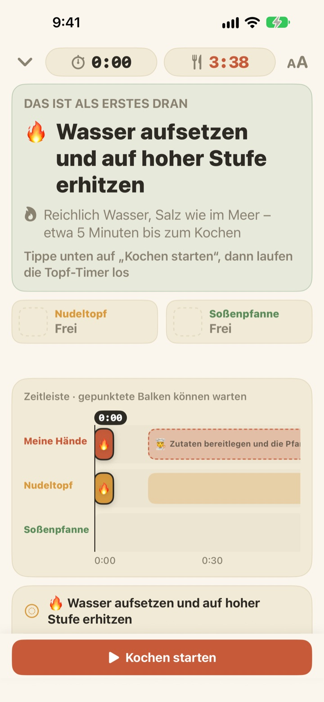
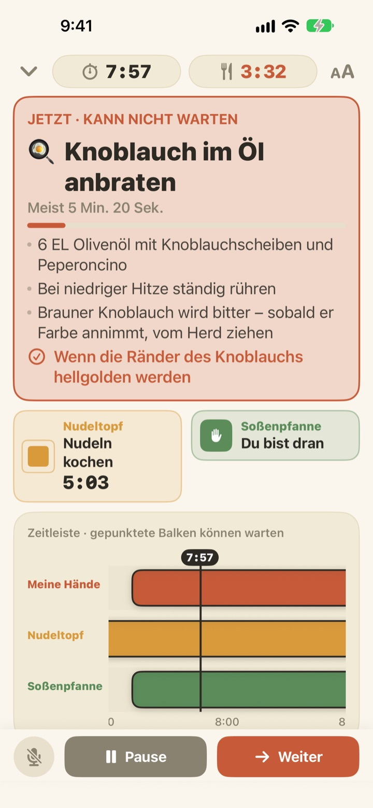
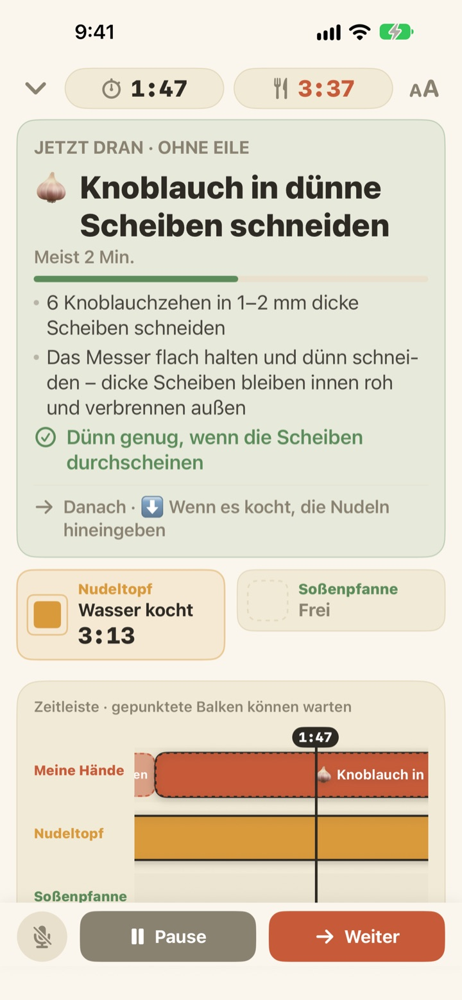
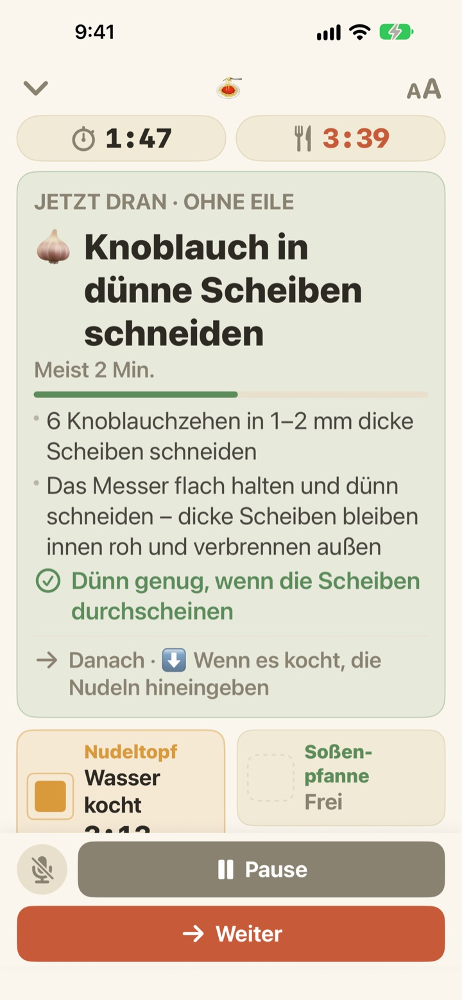

Die Pasta kocht.
Die Soße wird nebenbei fertig.
Wenn zwei Töpfe unterschiedlich schnell laufen, zeigt Geusaie groß die eine Sache, die deine Hände jetzt erledigen sollten. Die Soße wird rückwärts von dem Moment geplant, in dem die Pasta aus dem Wasser kommt.
Alle Funktionen sind kostenlos. Kein Konto nötig.

Probier es aus
Koch eine Portion Aglio e Olio in 20-facher Geschwindigkeit. Tippe auf „Kochen starten“ und dann jedes Mal auf „Weiter“, wenn du eine Aufgabe erledigt hättest. Achte darauf, wie sich die Karte verändert, wenn die Pasta abgegossen werden muss.
Drei Timer gestellt und die Pasta trotzdem verkocht?
Ein Timer für die Pasta, einer für die Soße, und den Knoblauch hast du im Kopf. Irgendwann weißt du nicht mehr, was zuerst dran ist. Du schneidest gerade, als die Pasta raus muss, und die Soße ist zwei Minuten zu spät. Geusaie kennt das Rezept als „erst das, dann das“ und sagt dir nur die eine Sache, die jetzt zählt.
Was nicht warten kann, färbt die Karte rot
Pasta abgießen, Knoblauch kurz vorm Verbrennen: Wenn eine Aufgabe das Essen ruiniert, sobald sie sich verschiebt, wird die Karte terrakottarot und sagt dir, dass du das Schnippeln kurz liegen lassen sollst.
Ist ein Topf fertig, bekommst du eine Mitteilung, auch wenn du gerade nicht hinschaust, samt der Aufgabe, die jetzt dran ist.

Schnippeln, wenn die Hände frei sind
Knoblauch schneiden, Käse reiben, abwiegen: Das hat keine feste Uhrzeit, deshalb zählt Geusaie hier keine Sekunden. Der Balken füllt sich, solange deine Hände frei sind, hält an, wenn ein Topf dich braucht, und läuft dann genau dort weiter.
Schaltest du den Herd drei Minuten später ein, rutscht alles Weitere um drei Minuten mit. Der Plan wird immer neu aus dem berechnet, was du tatsächlich gemacht hast.

Auf die Arbeitsplatte stellen, per Stimme weiter
Vier Schriftgrößen, damit du alles auch aus ein, zwei Schritten Entfernung lesen kannst. Beim Kochen bleibt der Bildschirm an.
Nasse Hände? Sag weiter, und es geht ohne Berührung zur nächsten Aufgabe.

In drei Schritten zum Essen
- 1
Gericht wählen
Du siehst, wie lange es ungefähr dauert und wie viele Töpfe du brauchst.
- 2
„Kochen starten“ tippen
Zuerst siehst du deine erste Aufgabe. Ab dem Tippen laufen die Topfuhren.
- 3
Fertig? Weiter.
Tippe auf den Button oder sag „weiter“, dann kommt die nächste Aufgabe.
Die Farbe zeigt, wie dringend es ist
- Grün
- Vorbereitung. Lass dir Zeit.
- Senfgelb
- Ein Topf braucht dich. Jetzt erledigen, aber ohne Hektik.
- Terrakotta
- Wartest du, wird die Pasta weich oder der Knoblauch verbrennt. Jetzt machen.
- Topf-Kacheln
- Das schrumpfende Quadrat ist die verbleibende Zeit. Topfzeiten werden nie versteckt.
Auf der Zeitleiste stehen gestrichelte Balken für Aufgaben, die warten können.
Alle Funktionen sind kostenlos
Kostenlos
- Beide Rezepte
- Ein Timer pro Topf und die ganze Zeitleiste
- Mitteilung, wenn ein Topf fertig ist
- Weiter per Stimme
- Vier Schriftgrößen
- Rezepte über Siri und Kurzbefehle öffnen
Entwickler unterstützen (freiwillig)
- Wenn dir die App hilft, kannst du in den Einstellungen ein kleines Trinkgeld geben
- Trinkgeld schaltet nichts frei. Auch ohne bleiben alle Funktionen da
Einmalige Beträge, kein Abo.
Kein Konto, keine Werbung, und es funktioniert auch ohne Internet.
Häufige Fragen
Ich sage „weiter“, aber nichts passiert.
Der Mikrofon-Button unten links ist rot, solange zugehört wird, und grau, wenn er aus ist. Erlaube beim ersten Mal Mikrofon und Spracherkennung. Falls du abgelehnt hast, kannst du beides unter Einstellungen > Geusaie wieder einschalten. Die App hört auf das Wort, das auf ihrem Weiter-Button steht. In einer sehr lauten Küche tippst du einfach auf „Weiter“.
Ein Topf ist fertig, aber es kam keine Mitteilung.
Prüfe unter Einstellungen > Mitteilungen > Geusaie, ob Mitteilungen erlaubt sind. Ein aktiver Fokus kann sie stummschalten. Mitteilungen kommen nur, wenn ein Topf fertig ist. Bei der Vorbereitung drängelt die App nie.
Was passiert mit dem Plan, wenn ich später anfange?
Er wird aus dem neu berechnet, was du tatsächlich getan hast. Schaltest du den Herd drei Minuten später ein, rutscht alles Weitere um drei Minuten. Die Soße bleibt rückwärts auf den Moment geplant, in dem die Pasta fertig ist.
Die Schrift ist zu klein.
Tippe im Kochbildschirm oben rechts auf den Button für die Schriftgröße und wähle Normal, Groß, Größer oder Am größten. Deine Wahl bleibt gespeichert.
Geht der Bildschirm beim Kochen aus?
Nein. Während du kochst, bleibt der Bildschirm an, damit du ihn mit nassen Händen nicht anfassen musst.
Welche Gerichte sind dabei?
Aglio e Olio (etwa 15 Minuten, 2 Töpfe) und Tomaten-Sahne-Pasta (etwa 20 Minuten, 2 Töpfe), nach Rezepten von Serious Eats, Gimme Some Oven, RecipeTin Eats und The Burnt Butter Table. Jedes Gericht, bei dem zwei Töpfe gleichzeitig laufen, passt gut. Schreib uns, was du dir als Nächstes wünschst.
Wird meine Stimme aufgenommen?
Nein. Die App hört nur auf das Wort „weiter“ und nimmt nichts auf und speichert nichts. Wenn dein Gerät es unterstützt, läuft die Spracherkennung direkt auf dem Gerät. Es werden keine persönlichen Daten erfasst.
Kann ich die App mit Siri öffnen?
Ja. Wähle in Siri oder der Kurzbefehle-App ein Gericht, und sein Kochbildschirm öffnet sich sofort. Die Uhren starten erst, wenn du auf „Kochen starten“ tippst, also wenn du bereit bist, das Wasser aufzusetzen.
Auf welchen Geräten läuft die App?
Auf iPhone und iPad mit iOS 17 oder neuer. Kein Konto und keine Internetverbindung nötig.
Wie melde ich ein Problem oder schlage ein Rezept vor?
Über Einstellungen > Feedback senden in der App oder per E-Mail an die Adresse unten. Mit Gerätemodell und iOS-Version können wir schneller helfen. Meist antworten wir innerhalb weniger Tage.
Hängst du irgendwo fest, ist dir etwas aufgefallen oder hast du ein Rezept im Kopf? Schreib an leeo@kakao.com.